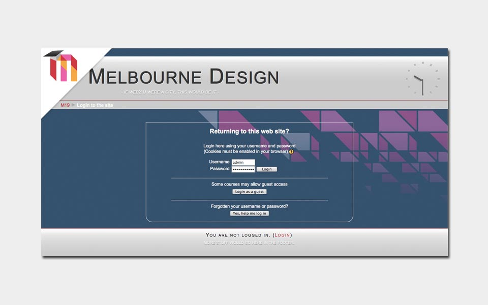
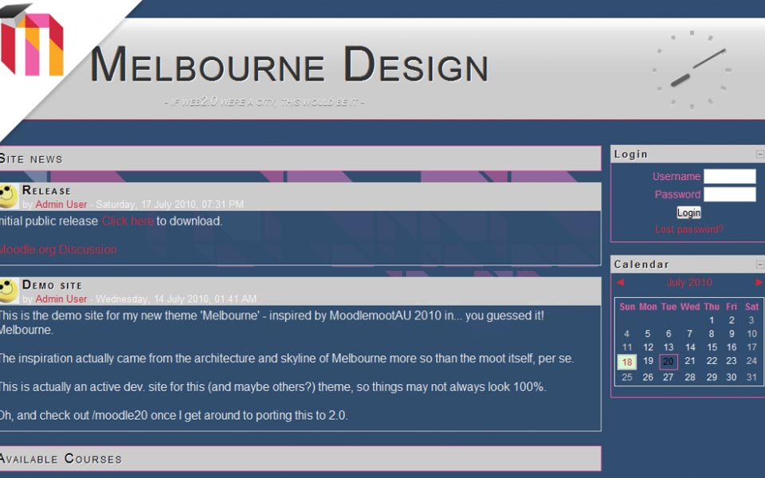

Melbourne
Melbourne, Australia is a decidedly cool city filled with modern architecture: bold colors, distinct lines, and abstract patterns. This is the inspiration for “Melbourne” the Moodle 1.9 theme.
Features
- Melbourne leverages advanced styling techniques via CSS3 for users with modern browsers
- Melbourne uses progressive enhancement, so users with older browsers aren’t left behind
- Valid XHTML 1.0 means that Melbourne works seamlessly with Moodle
- Vendor prefixes make sure that Melbourne displays properly for any user
Gallery


Download
This theme is available for download from the Moodle themes database or github.
Documentation & Support
Support for this theme is provided at the Moodle.org forums.